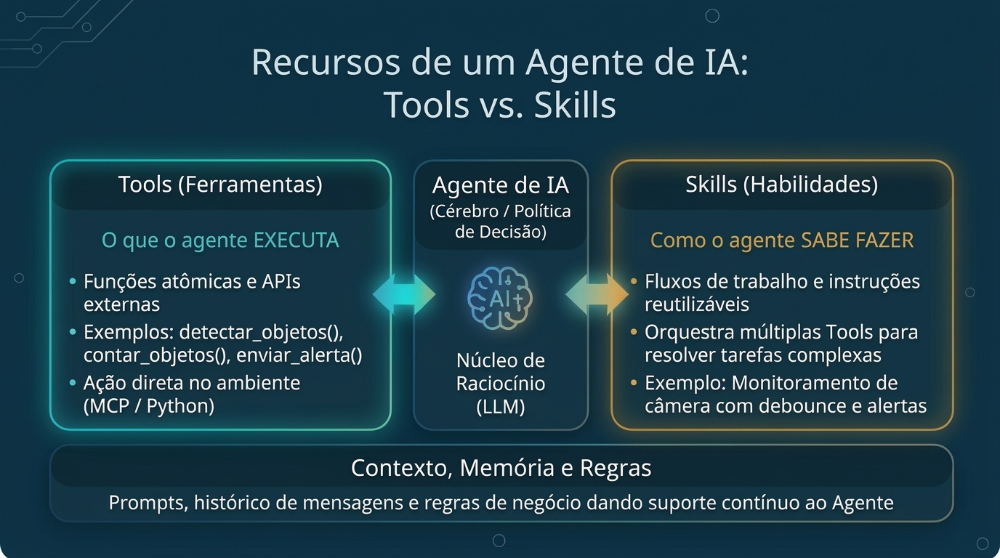

Agentes + Visão Computacional
Agentes + Visão Computacional
🛠️ Ferramentas Utilizadas
🤖 1. O que é um Agente de IA?
Nos Dias 01 e 02, aprendemos a manipular pixels e a utilizar modelos como o YOLO para detectar objetos em imagens e vídeos. Porém, um detector convencional apenas retorna dados brutos (caixas, classes e probabilidades). Como transformar essas detecções em tomada de decisão e ação no mundo real?
É aqui que entra o conceito de Agente de IA: um sistema que observa um ambiente, processa informações e escolhe ações para alcançar um objetivo específico.

- Combinação de técnicas: Um agente pode combinar modelos de aprendizado de máquina (como redes neurais), regras de negócio e funções Python. Nem todo agente precisa usar um Modelo de Linguagem (LLM) — agentes baseados em regras ou políticas determinísticas são rápidos, previsíveis e amplamente usados na indústria.
- Agente de Visão (Vision Agent): Utiliza imagens ou vídeos como observações do ambiente. Enquanto um detector comum apenas lista os objetos identificados, o agente de visão usa essas detecções para escolher verificações adicionais, acionar ferramentas externas e decidir o próximo passo.
Recursos Disponíveis em um Agente: Tools, Skills e Contexto
Para que um agente consiga ir além de apenas processar dados e passe a resolver problemas reais, ele se apoia em três pilares principais de recursos:

- Papel: São funções atômicas, APIs externas ou integrações que permitem ao agente interagir diretamente com o mundo externo (ler sensores, rodar um modelo, consultar um banco de dados ou enviar uma mensagem).
- No nosso projeto: Funções como
detectar_objetos(),contar_objetos(),verificar_condicao()eenviar_alerta()expostas via Python/MCP.
- Papel: São fluxos de trabalho estruturados, instruções passo a passo e boas práticas reutilizáveis que ensinam o agente a combinar múltiplas Tools para cumprir uma tarefa complexa.
- No nosso projeto: A rotina completa de monitoramento de câmera — que coordena a comparação antes/depois, aplica confirmação temporal (debounce) e decide quando notificar a equipe.
- Papel: Reúne os prompts do sistema, o histórico de observações anteriores (como a contagem de objetos no quadro passado) e as regras de negócio que guiam as decisões do agente.
⚖️ 2. Bot vs. Agente e Níveis de Autonomia
Bot e Agente: qual é a diferença?
Um bot automatiza interações ou tarefas repetitivas seguindo um roteiro fixo (gatilho → regra → resposta). Já um agente persegue um objetivo: ele planeja passos, usa ferramentas, observa o resultado e ajusta a rota quando necessário.
Importante: Os conceitos não são excludentes! Um bot (como um bot do Telegram) pode fazer parte de um sistema agente, atuando como o canal de comunicação ou ferramenta de notificação do agente.

Níveis de Autonomia de Agentes de IA
Dependendo de quanto controle o humano mantém sobre o sistema e de como o agente planeja suas ações, classificamos os agentes em 5 níveis de autonomia — divididos entre aqueles em que o usuário é ativo no fluxo (L1 a L3) e aqueles em que o usuário é passivo (L4 e L5), apenas aprovando bloqueios ou monitorando o sistema:

Artigo original: Levels of Autonomy for AI Agents Working Paper.
No nosso projeto prático: Construiremos um agente que opera com política determinística em código (onde definimos os critérios de decisão e o agente executa o monitoramento de forma autônoma) e veremos como ele pode ser expandido com um LLM para planejar passos de forma mais flexível.
🔌 3. Model Context Protocol (MCP)
Quando construímos agentes que precisam acionar diversas funções (consultar bancos de dados, verificar sensores, analisar imagens ou enviar mensagens), integrar cada ferramenta manualmente pode se tornar confuso.
O Model Context Protocol (MCP) é um protocolo aberto que padroniza a forma como aplicações de IA descobrem e utilizam ferramentas (tools) e recursos disponibilizados por servidores compatíveis.

Componentes da Arquitetura MCP:
- Papel: É a aplicação principal que integra o modelo ou a política do agente e coordena toda a interação (por exemplo, o nosso notebook no Google Colab ou uma aplicação em produção).
- Papel: Componente dentro do Host que mantém a conexão com o servidor MCP, consulta quais ferramentas estão disponíveis e solicita a execução de operações.
- Papel: Expõe ferramentas padronizadas (como funções Python decoradas com
@mcp.tool()) para que o cliente possa chamá-las de forma segura e estruturada.
Atenção: O MCP não é um modelo de IA e não escolhe sozinho quais ferramentas usar. A decisão sempre cabe ao agente (seja via regras em código ou via LLM). No Google Colab, cliente e servidor podem ser testados na mesma sessão utilizando o
FastMCP.
💻 4. Prática: Vision Agent para Detectar Mudanças entre Imagens
Nesta prática final, vamos integrar tudo o que construímos no minicurso para criar no Google Colab um Vision Agent completo, capaz de inspecionar imagens com YOLO + OpenCV, tomar decisões com base nas detecções, acionar ferramentas via MCP e enviar alertas automáticos no Telegram!

Ferramentas do Agente (FastMCP)
detectar_objetos(caminho_imagem, confianca): executa o YOLO e retorna classes, confiança e coordenadas \((x_1, y_1, x_2, y_2)\).contar_objetos(deteccoes, classe): contabiliza as detecções de uma classe específica na cena.verificar_condicao(observacao): calcula a variação na contagem (\(\Delta C = C_{\text{depois}} - C_{\text{antes}}\)) e avalia se houve mudança relevante na classe monitorada.enviar_alerta(mensagem, token_bot, chat_id, caminho_foto): envia mensagem de texto e/ou foto anotada pelo YOLO via Telegram Bot API.
Como o agente escolhe o que investigar?
A versão padrão do nosso projeto utiliza regras determinísticas em Python:
- O agente observa a cena comparando duas imagens (antes e depois) com
detectar_objetos()econtar_objetos(). - Se houver presença ou variação na contagem da classe monitorada (\(\Delta C \neq 0\), ex.:
person), a política do agente acionaverificar_condicao(observacao). - Caso a verificação confirme uma mudança relevante (\(C_{\text{depois}} > 0\)), a regra de ação dispara
enviar_alerta()para notificar o usuário no Telegram (com texto e imagem anotada).
Um Modelo de Linguagem (LLM) pode substituir ou complementar esse planejador determinístico:
- Em vez de
if/elsefixos, o LLM lê a lista de ferramentas do Servidor MCP (a partir das docstrings e tipos do Python) e escolhe quais chamar com base no objetivo em linguagem natural. - Como essa opção exige acesso a um provedor de modelo e uma chave de API (
API Key), ela é opcional e não é necessária para executar a versão básica do minicurso.
💡 Dica para o mundo real (Evitando Flood de Alertas em Vídeos): Se você conectar esse agente a uma câmera ao vivo (usando o loop de vídeo do Dia 02), uma pessoa caminhando na cena aparecerá em \(30\text{ quadros/s}\) — o que dispararia \(30\) mensagens seguidas no Telegram! Em sistemas reais, adicionamos duas regras simples na política do agente:
- Confirmação Temporal (Debounce): Só confirmar a mudança se a nova contagem se mantiver por pelo menos \(N\) quadros consecutivos (evita falsos positivos de um único frame borrado).
- Tempo de Resfriamento (Cooldown): Guardar o horário do último envio (
time.time()) e aguardar um intervalo mínimo (\(\Delta t \ge 60\text{ s}\)) antes de enviar um novo alerta da mesma classe.
Clique aqui para abrir o projeto no Kaggle
🧠 5. Reflexão: O Experimento da Sala Chinesa — A IA tem consciência?
Ao longo deste minicurso, evoluímos de simples matrizes de pixels (Dia 01) para redes neurais capazes de reconhecer dezenas de objetos em tempo real (Dia 02) e, finalmente, construímos um Agente de Visão que observa uma cena, interpreta mudanças, toma decisões e envia alertas (Dia 03). Diante de sistemas tão autônomos — especialmente quando combinados a grandes Modelos de Linguagem (LLMs) — surge uma pergunta inevitável:
Quando uma IA "enxerga" uma pessoa na imagem ou "decide" agir, ela realmente compreende o que está fazendo? A IA possui consciência?
Para responder a essa questão, o filósofo John Searle propôs em 1980 um dos exercícios mentais mais famosos da ciência da computação e da filosofia da mente: O Argumento da Sala Chinesa (Chinese Room).
📦 Como funciona o exercício mental?
Imagine a seguinte situação passo a passo:
- Uma pessoa que não sabe absolutamente nada de chinês (fala apenas português) está trancada sozinha dentro de uma sala fechada.
- Dentro da sala, existem caixas cheias de ideogramas chineses e um manual gigantesco de regras em português. O manual não traduz nenhuma palavra; ele apenas dá instruções visuais sobre os formatos dos símbolos, como:
"Se você receber uma folha com o símbolo
你好, procure na caixa 3 e devolva uma folha com os símbolos您好." - Do lado de fora da sala, um falante nativo de chinês passa perguntas escritas em chinês por baixo da porta (Entrada / Input).
- A pessoa trancada olha o desenho dos símbolos recebidos, segue rigorosamente as instruções do manual (Processamento) e devolve a resposta em chinês por baixo da porta (Saída / Output).
Para quem está do lado de fora, a conversa flui tão bem que parece haver alguém fluente em chinês dentro da sala. Porém, John Searle faz a pergunta decisiva: a pessoa lá dentro (ou a sala como um todo) aprendeu ou entende chinês?
Segundo a resposta defendida por John Searle, a resposta é um categórico NÃO. Para Searle, o operador dentro da sala apenas aprendeu a manipular símbolos formais seguindo um livro de regras, sem compreender o significado real de uma única palavra que recebeu ou devolveu.
⚖️ Sintaxe vs. Semântica (IA Fraca vs. IA Forte)
Com o experimento da Sala Chinesa, John Searle sustenta que executar um programa de computador — por mais sofisticado que seja — nunca gera compreensão ou consciência por si só, dividindo a discussão em dois conceitos:
- O que é: A capacidade de processar entradas e gerar saídas corretas seguindo regras matemáticas, lógicas ou estatísticas.
- Na prática (O que existe hoje): É onde estão todos os modelos atuais (OpenCV, YOLO, LLMs e Agentes). O sistema simula um comportamento inteligente com extrema eficiência, mas apenas manipula padrões matemáticos sem saber o que eles significam no mundo real.
- O que é: Ter compreensão real do significado das coisas, intencionalidade e experiência subjetiva (consciência de existir, sentir e compreender conceitos).
- Na visão de Searle: A mera execução de regras sintáticas não produz semântica. A máquina não "sabe" o que é um ser humano, um perigo ou um sentimento; ela apenas calcula probabilidades.
🔍 O que isso significa para a Visão Computacional e os Agentes?
- No YOLO: Quando o modelo detecta
person (94%), ele não sabe o que é uma pessoa nem tem consciência de estar olhando para uma vida humana. Para a rede neural, a foto é apenas uma grade de números (\(0\) a \(255\)) que, multiplicada por milhões de pesos matemáticos, ativou um rótulo no final da conta. - Nos Agentes e LLMs: Quando um agente escolhe chamar a ferramenta
enviar_alerta(), ele opera exatamente como o habitante da Sala Chinesa de Searle: cruza entradas com regras ou probabilidades estatísticas de forma brilhante, mas não tem consciência, desejos próprios nem bom senso humano.
💡 Lição prática para engenheiros e desenvolvedores: Entender o argumento de John Searle na Sala Chinesa evita dois erros comuns: achar que a IA tem "vontade própria" (como nos filmes de ficção) ou confiar cegamente nas decisões de um agente achando que ele "entende" o contexto humano. A IA é uma ferramenta matemática poderosa, mas a consciência, a ética e a responsabilidade final pelas decisões são sempre nossas!
🚀 6. Próximos Passos: Continue sua Jornada!
Chegamos ao fim do nosso BootCamp de Visão Computacional + IA na Prática, mas este é apenas o começo da sua caminhada! Se você gostou de construir soluções com processamento de imagens, redes neurais e agentes inteligentes, veja como continuar evoluindo dentro da UFRN:
🎓 Disciplinas na Escola de Ciências e Tecnologia (ECT - UFRN)
Na Escola de Ciências e Tecnologia (ECT/UFRN), você pode cursar disciplinas que aprofundam toda a base matemática, teórica e prática dos temas que exploramos nestes três dias (com materiais abertos também disponíveis no portal do Prof. Helton Maia):
- 📊 Aprendizado de Máquina (Machine Learning): Construa a base essencial da Inteligência Artificial moderna. Você aprenderá como algoritmos extraem padrões de dados usando Python — passando por análise exploratória, regressão, classificação, agrupamento (clustering), árvores de decisão e avaliação rigorosa de modelos.
- 🧠 Aprendizado Profundo (Deep Learning —
ECT3695): Mergulhe no funcionamento interno das Redes Neurais Artificiais! A disciplina aborda desde o neurônio matemático e o algoritmo de Backpropagation até Redes Neurais Convolucionais (CNNs), arquiteturas modernas, Transfer Learning e implementação prática de modelos profundos. - 👁️ Visão Computacional (
ECT3709): Aprofunde tudo o que vimos no minicurso! Conecta os fundamentos matemáticos do Processamento Digital de Imagens (filtros, morfologia, transformadas e representação de cores) com o estado da arte em redes neurais aplicadas à visão (detecção de objetos com YOLO, segmentação, rastreamento e análise de vídeo em tempo real).
🤖 Estude e Desenvolva Projetos no Laboratório de Robótica e Automação (ECT - UFRN)
Quer ir além da tela do computador e ver seus algoritmos ganhando vida no mundo físico?
O Laboratório de Robótica e Automação (ECT - UFRN) está disponível para estudantes que desejam estudar, praticar e desenvolver projetos nas áreas de:
- Visão Computacional e Inteligência Artificial Aplicada;
- Robótica Móvel, Sistemas Embarcados e Automação;
- Pesquisa científica, projetos de extensão e desenvolvimento de protótipos.
Participar de um laboratório é uma das melhores experiências da universidade: você trabalha em equipe, aprende na prática com problemas reais, troca conhecimentos com veteranos e professores e constrói um portfólio sólido ainda durante a graduação!
💭 Para ir mais a fundo...
📚 Materiais e artigos sugeridos
- Prof. Helton Maia — Material de Visão Computacional
- Prof. Helton Maia — Playground Interativo de Processamento de Imagens
- Levels of Autonomy for AI Agents — Working Paper (arXiv)
- Documentação Oficial do Model Context Protocol (MCP)
- Documentação Oficial da Telegram Bot API
🤖 Prompts para estudar com LLMs
Copie e cole os prompts abaixo no seu assistente de IA favorito para aprofundar os conceitos vistos na aula:
-
Arquitetura de Agentes de Visão (Regras vs. LLMs):
"Explique a diferença entre um pipeline tradicional de Visão Computacional (que apenas executa um modelo como YOLO) e um Agente de Visão (Vision Agent) que segue o ciclo Observação → Interpretação → Decisão → Ação. Compare quando vale a pena usar uma política de decisão baseada em regras determinísticas em Python e quando vale a pena usar um LLM como planejador."
-
Model Context Protocol (MCP) na Prática:
"Explique de forma didática o que é o Model Context Protocol (MCP), qual problema ele resolve no desenvolvimento de agentes de IA e qual é o papel do Host, do Cliente MCP e do Servidor MCP. Mostre um exemplo simples em Python usando FastMCP expondo duas ferramentas."
-
Integrando Visão Computacional com Bot do Telegram:
"Como criar um bot no Telegram usando o @BotFather, obter o Token e o Chat ID, e enviar tanto mensagens de texto quanto imagens anotadas pelo OpenCV/YOLO em Python usando a biblioteca requests? Mostre o código passo a passo e explique boas práticas para evitar enviar múltiplos alertas repetidos em vídeos."
📝 Avaliação do Minicurso
Sua opinião é fundamental para melhorarmos as próximas edições! Por favor, reserve um minuto para responder ao formulário de avaliação do minicurso: